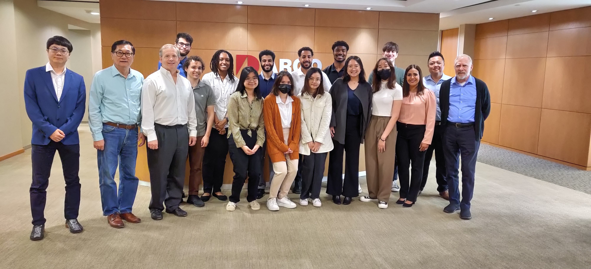
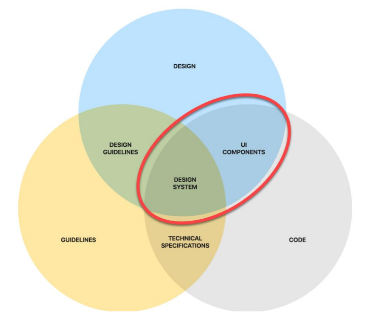

UX Master Component Library
Overview
Project Management Plan, Requirements Doc, Architecture Doc, Detailed Design Doc, Testing Plan, Final Report, Final Demonstration
ARGO Data is developing a two directional UX master component library (MCL). This project will intersect development with design. Students will gain practical domain experience with StorybookJS in an Azure environment. The MCL will provide scalability and enforce standards documentd by the UX program. The functional components can be edited in the MCL and consumed across all projects. If a project develops an improvement for a functional component in the MCL, that improvement can be modified back to the MCL.
